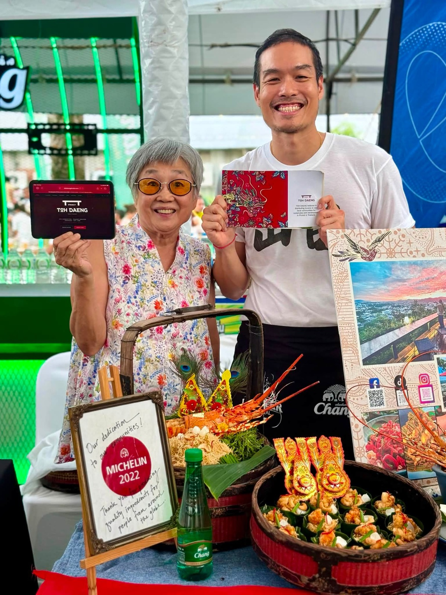
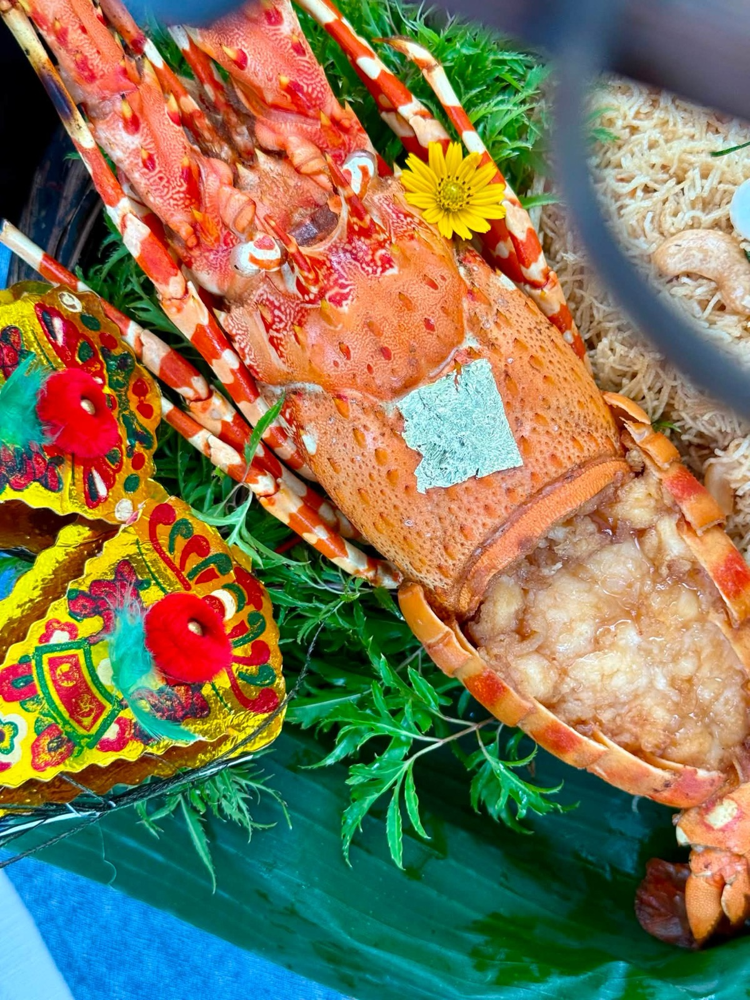
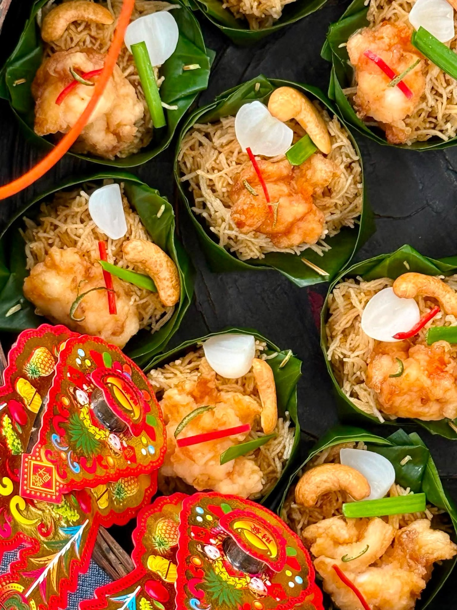
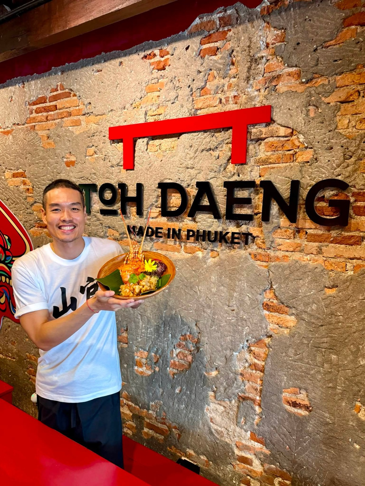
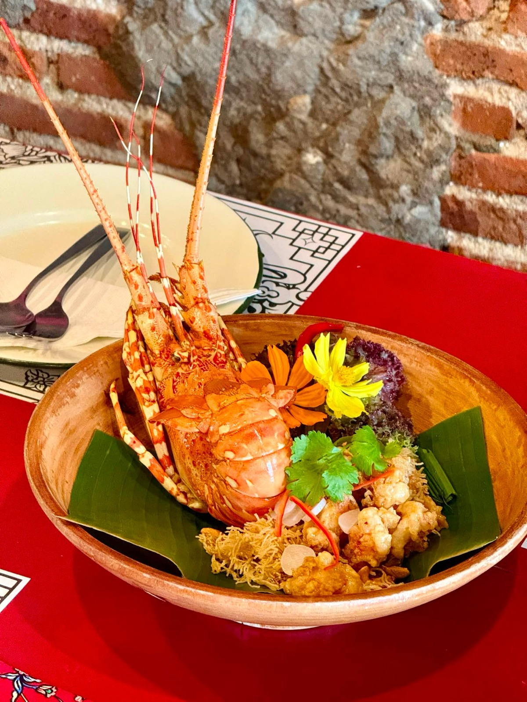
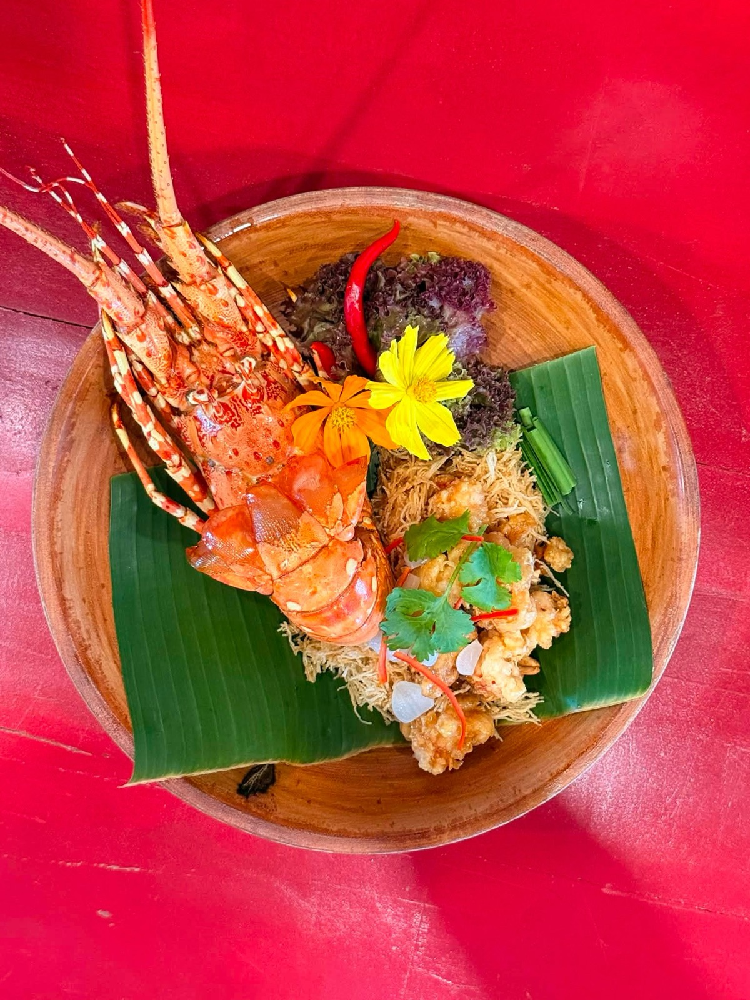

2569 · กิจการ · บันทึกย่อย
ร่วมงาน Phuket Lobster Festival 2026 — โต๊ะแดงเป็น 1 ใน 122 ร้านที่เสิร์ฟเมนูกุ้งมังกรภูเก็ต






โพสต์ 31 ก.ค. 2569 (งานเปิดเทศกาล):
เมนู Phuket Lobster เด็ดๆ กว่า 122 ร้าน 🧧
เสิร์ฟรัวๆ ตลอดเดือน 8/2026 น้าาา 😋❤️
#phuketlobsterFestival2026
#วันเกษตรและของดีตำบลฉลอง
#tohdaengPhuket 🧧
#longdaengPhuket 🧧
#บ้านอาจ้อ ❤️
โพสต์ 18 ส.ค. 2569 (จานที่ร้าน):
Phuket Lobster + หมี่กรอบ พ.ศ.๒๔๗๙ 😋❤️
ถ่ายท่าไหนดีนิ กุ้งก้อจะเอา โต๊ะแดงก้อต้องเห็น ตั่วโก๊ก้อต้องแลดีย์ 😆❤️
#longdaengPhuket 🧧
#tohdaengPhuket 🧧
#บ้านอาจ้อ ❤️